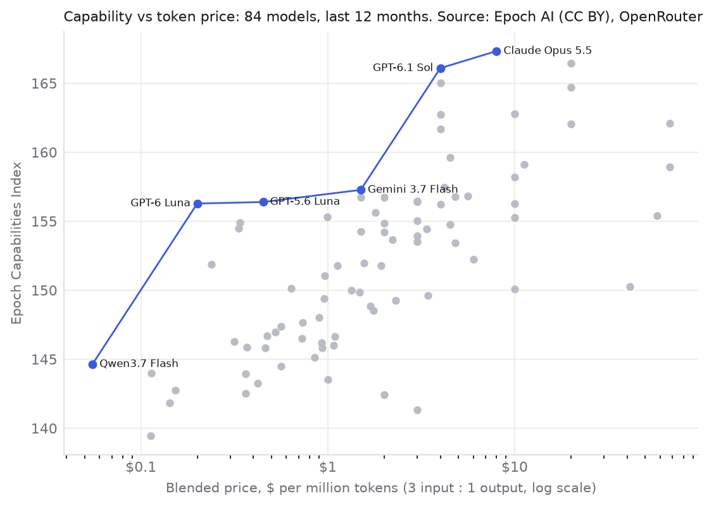

AI Signal
Charts for Wednesday 07 October 2026
Token pricing: capability vs price

Each dot is a model released in the last 12 months: the Epoch Capabilities Index against its list price per million tokens on OpenRouter (3 input : 1 output). Blue = the most capable model at each price or below. List prices ignore tokens used per task, so heavy reasoning models look cheaper than they are in practice. Sources: Epoch AI (CC BY 4.0), OpenRouter.